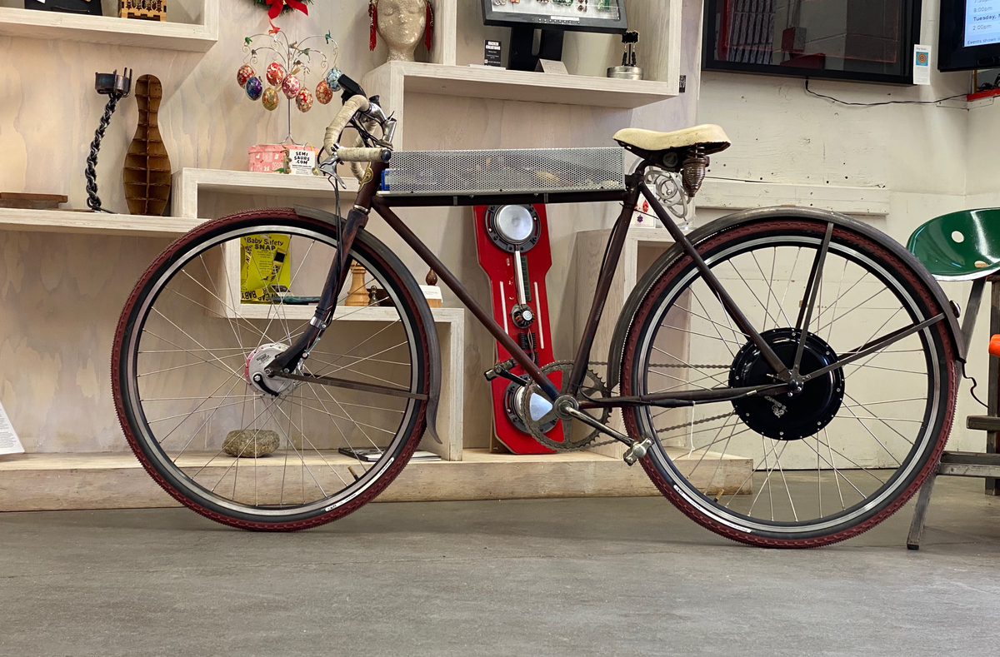
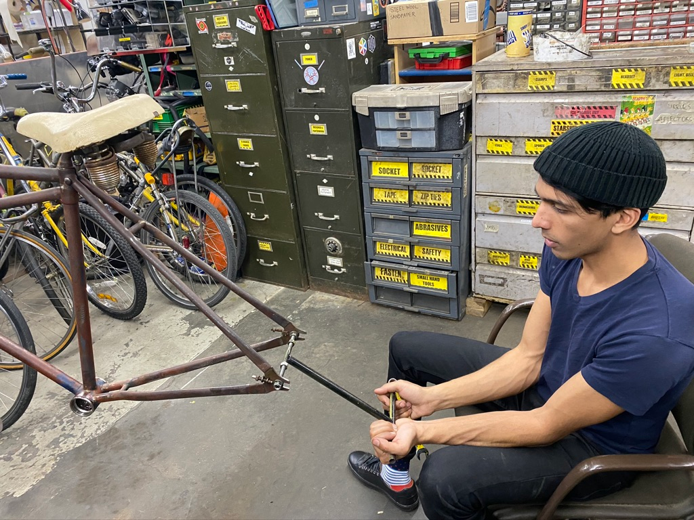
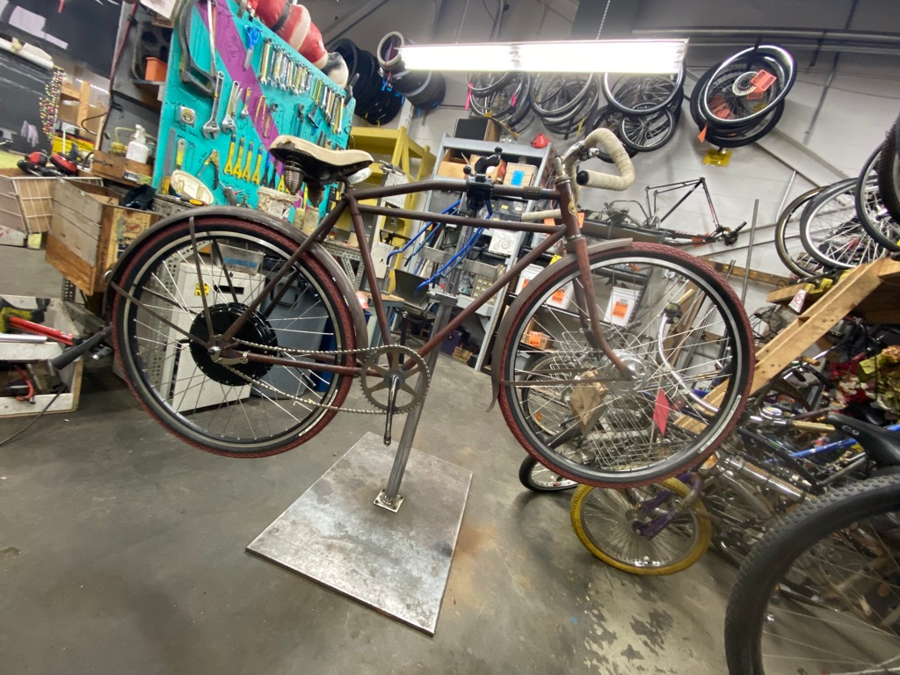

100 year old electric bicycle

Summary
A work in progress, this is my antique motor-bicycle, originally manufactured for the Charles Williams Stores sometime between 1917-1922, the bike was originally built for a small gas engine. I received the bike without wheels, and a skip tooth chain with an odd-sized pitch (1.1"). I added hand fabricated wheels, laced with a direct drive rear hub from ebikekit and a Sturmey-Archer front drum brake, built a front brake sensor out of a hard drive magnet and a hall effect sensor, used old LiPo batteries from Biobot’s samplers, and various other parts I had lying around.
| Parameters | Value |
|---|---|
| Max Speed | 28MPH |
| Distance | 6mi |
| Acceleration | 0-25MPH, 4s |
| Max Current | 30A |
| Max Voltage | 66V |
Photos

Fig. 1: Frame was only ~100mm rear spacing, so I stretched it to 135mm to accommodate the modern direct drive hub.
 Fig. 2: Wheels fitted up, scavenged front chainring and single piece crank from Scul - chain droop was fixed on a later date.